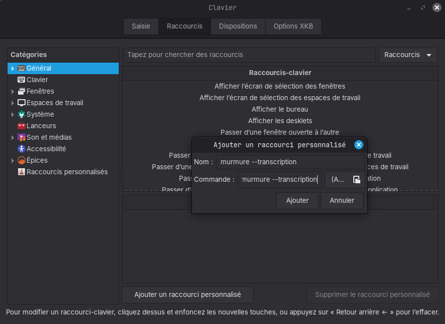

Configurer les raccourcis sous Linux¶
Sous Linux Wayland, Murmure n'enregistre aucun raccourci global par lui-même. Vous configurez des raccourcis personnalisés au niveau OS qui appellent directement le binaire murmure. Cette approche fonctionne de façon fiable sur tous les compositeurs (GNOME, KDE, Hyprland, Sway, autres) et survit aux redémarrages sans configuration supplémentaire.
Référence des commandes CLI¶
Murmure expose les commandes suivantes. Chacune peut être assignée à un raccourci personnalisé OS.
| Commande | Effet |
|---|---|
murmure --transcription |
Toggle la transcription standard ON/OFF |
murmure --transcription-command |
Toggle la transcription en mode Command |
murmure --paste-last |
Colle la dernière transcription |
murmure --cancel |
Annule l'enregistrement en cours et revient en idle |
murmure --voice-mode |
Toggle le Voice Mode ON/OFF |
murmure --llm-mode 1 |
Lance une transcription avec le prompt LLM 1 |
murmure --llm-mode 2 |
Lance une transcription avec le prompt LLM 2 |
murmure --llm-mode 3 |
Lance une transcription avec le prompt LLM 3 |
murmure --llm-mode 4 |
Lance une transcription avec le prompt LLM 4 |
murmure --llm-transform 1 |
Applique le prompt LLM 1 au texte sélectionné |
murmure --llm-transform 2 |
Applique le prompt LLM 2 au texte sélectionné |
murmure --llm-transform 3 |
Applique le prompt LLM 3 au texte sélectionné |
murmure --llm-transform 4 |
Applique le prompt LLM 4 au texte sélectionné |
Limitation Push-to-talk
Les raccourcis personnalisés OS se déclenchent à l'appui de la touche, pas au relâchement. Seul le mode toggle est donc utilisable. Le Push-to-talk (maintenir pour enregistrer, relâcher pour arrêter) ne peut pas être implémenté avec des raccourcis personnalisés OS.
GNOME¶
- Ouvrez Paramètres > Clavier > Voir et personnaliser les raccourcis > Raccourcis personnalisés.
- Cliquez sur le bouton + pour ajouter un nouveau raccourci.
- Renseignez :
- Nom :
Murmure transcription(ou le libellé de votre choix) - Commande :
murmure --transcription - Raccourci : appuyez sur la combinaison souhaitée (ex.
Ctrl+Super+Espace) - Cliquez sur Ajouter.
Répétez l'opération pour les autres commandes que vous souhaitez lier (par exemple murmure --paste-last sur un second raccourci).
KDE Plasma¶
- Ouvrez Paramètres système > Raccourcis > Raccourcis personnalisés.
- Cliquez sur Éditer > Nouveau > Raccourci global > Commande/URL.
- Dans l'onglet Déclencheur, assignez votre combinaison de touches.
- Dans l'onglet Action, saisissez la commande
murmure --transcription. - Appliquez et fermez.
Répétez pour les autres commandes que vous souhaitez lier.
Cinnamon¶
- Ouvrez Paramètres système > Clavier > Raccourcis > Raccourcis personnalisés.
- Cliquez sur Ajouter un raccourci personnalisé.
- Renseignez :
- Nom :
murmure --transcription(ou le libellé de votre choix) - Commande :
murmure --transcription - Cliquez sur Appliquer, puis cliquez sur Non assigné à côté du nouvel item et appuyez sur la combinaison souhaitée.

Répétez l'opération pour les autres commandes que vous souhaitez lier.
Hyprland¶
Ajoutez des bindings dans ~/.config/hypr/hyprland.conf. Remplacez SUPER, Y par votre modificateur et touche préférés.
# ~/.config/hypr/hyprland.conf
bind = SUPER, Y, exec, murmure --transcription
bind = SUPER SHIFT, Y, exec, murmure --paste-last
bind = SUPER ALT, Y, exec, murmure --cancel
Rechargez Hyprland pour appliquer (hyprctl reload ou déconnexion/reconnexion).
Sway¶
Ajoutez des bindings dans ~/.config/sway/config. Remplacez $mod+y par la combinaison de votre choix.
# ~/.config/sway/config
bindsym $mod+y exec murmure --transcription
bindsym $mod+Shift+y exec murmure --paste-last
bindsym $mod+Control+y exec murmure --cancel
Rechargez Sway pour appliquer (swaymsg reload).
Vérifier que murmure est dans le PATH¶
Si votre compositeur ne trouve pas le binaire murmure, le raccourci échoue silencieusement. Vérifiez que le binaire est dans le PATH :
S'il n'est pas trouvé, utilisez le chemin complet dans la commande, par exemple /usr/local/bin/murmure --transcription.
Dépannage¶
Le raccourci ne fait rien¶
- Vérifiez que
murmureest dans le PATH (lancezwhich murmuredans un terminal). - Assurez-vous que Murmure est déjà lancé en arrière-plan avant d'appuyer sur le raccourci. Les commandes CLI communiquent avec l'instance en cours d'exécution.
- Vérifiez qu'aucune autre application n'a revendiqué la même combinaison dans les paramètres clavier de votre OS.
Le raccourci se déclenche mais rien ne se passe dans Murmure¶
Ouvrez un terminal et lancez murmure --transcription manuellement. Si le message "no running instance found" s'affiche, Murmure n'est pas démarré. Lancez-le d'abord (il démarre dans la barre système).
Escape hatch : forcer XWayland¶
Si vous avez besoin de XWayland (par exemple un compositeur plus ancien), démarrez Murmure avec la variable d'environnement GDK_BACKEND :
Il s'agit d'une variable GTK standard. Murmure ne la définit plus automatiquement. En mode XWayland, les raccourcis globaux ne se déclenchent que lorsque la fenêtre Murmure a le focus.